.png)


.png)


Université d'Orleans
2024-2025
Master 2 Geomatiqque Limnologie
Module à étudier: Administration de base de donnée, Python, Géostatistiques, Webmapping, Gestion des ressources en eau, Etude limnique.
Passionné par la géomatique, j'ai à cœur de transformer les données géospatiales en cartographies dynamiques et analyses précises. Chaque projet que je réalise est le fruit d'un mélange d'expertise technique, d'innovation et d'une profonde compréhension des enjeux géospatiaux. Mon objectif est de fournir des solutions qui allient technologie avancée et méthodologies rigoureuses pour répondre efficacement aux défis spatiaux d'aujourd'hui
Contactez moiUne application réalisée avec arcgis online, qui met en lumière l'histoire de la ville de Ouidha à travers les joyaux touristiques.
Utilisation des images sentinels et controle de terrain pour la conformité des déclaration agricoles.
Utilisation de Mapbender pour la visualisation des données geographique.
Analyse comparative de deux bassins versants visants a l'allocation de budgets pour la restauration de la continuité ecologiques.
Etudes géohistoriques de l'évolution des plans d'eau dans les départements français de 1750 à 2020.
Analyse de la repartition spatiales des infrastructures hydauliques dans la commune de BONOU.
Land Surface Temperature
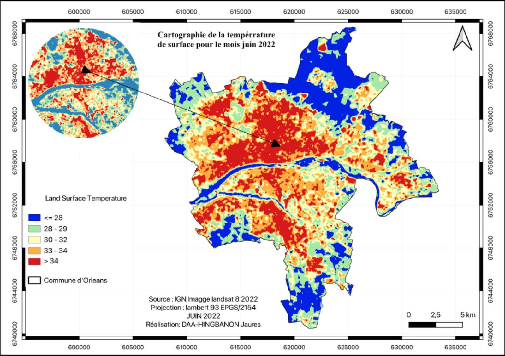NDVI
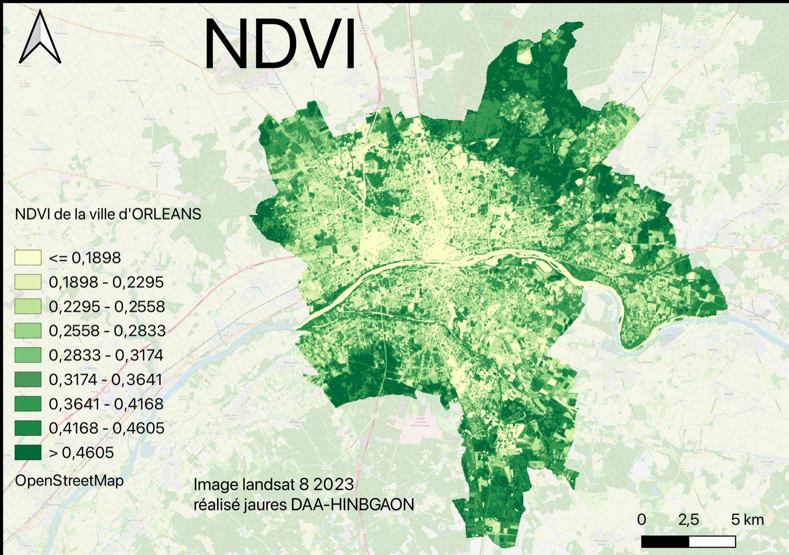Extraction des bassins
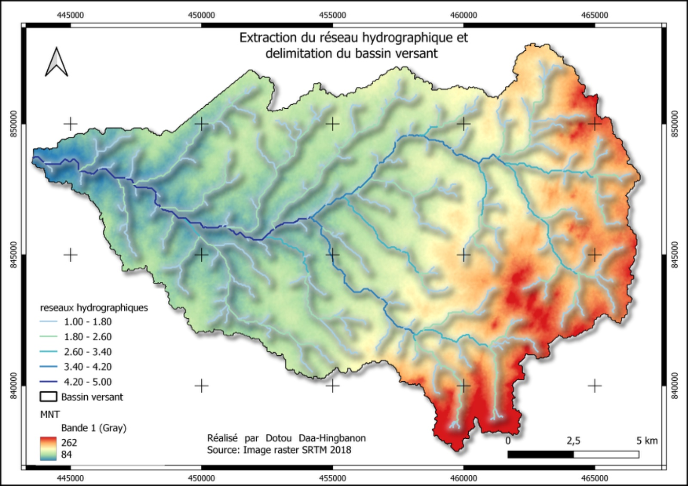Comportement du lac entre deux périodes
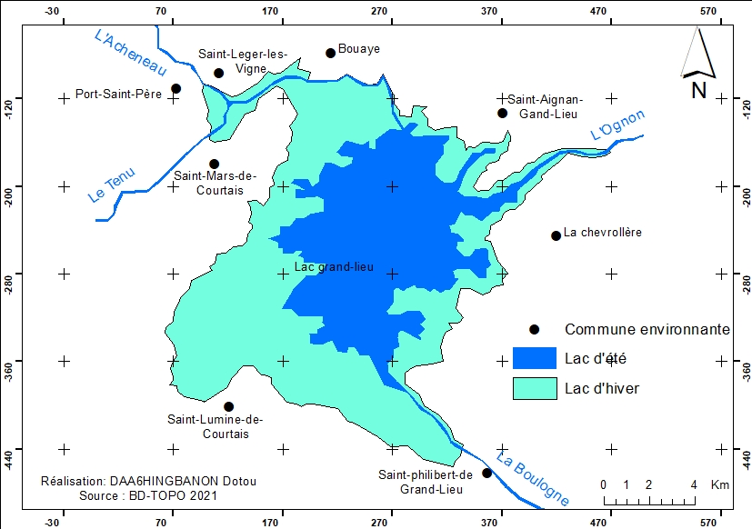Trajectoire de la densité des étangs

Carte de sotuation géographique de Bonou
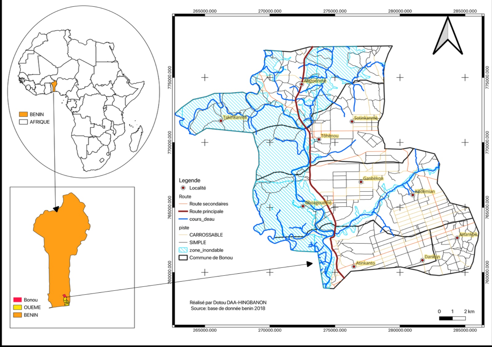Opération barkhane en Afrique
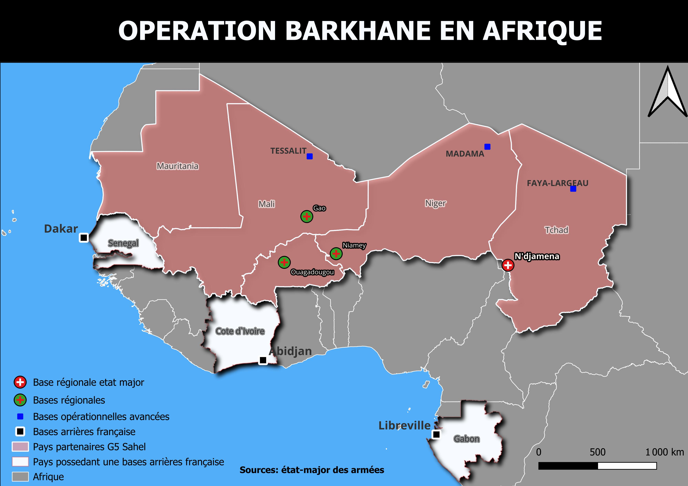CEDEAO EN 2022
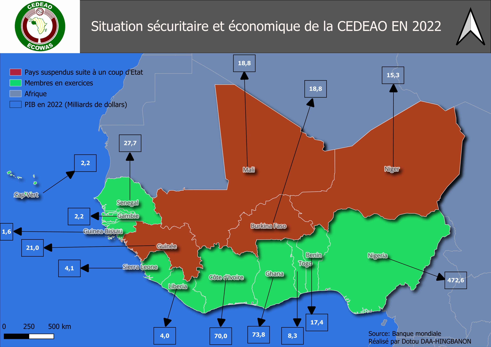Cartes du parcours commentés du jardin des plantes
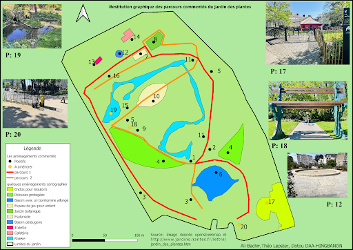FME (Feature Manipulation Engine) Essentials
FME (API Data Arcgis online) tables using
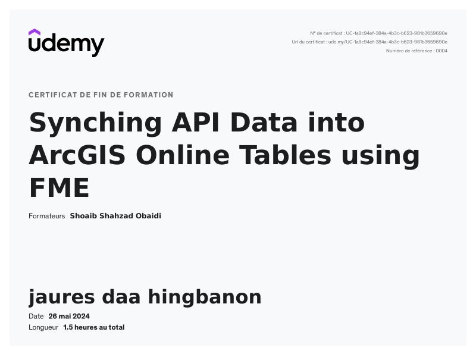Arcpy-Arcgis (Programmation geospatiale par python)
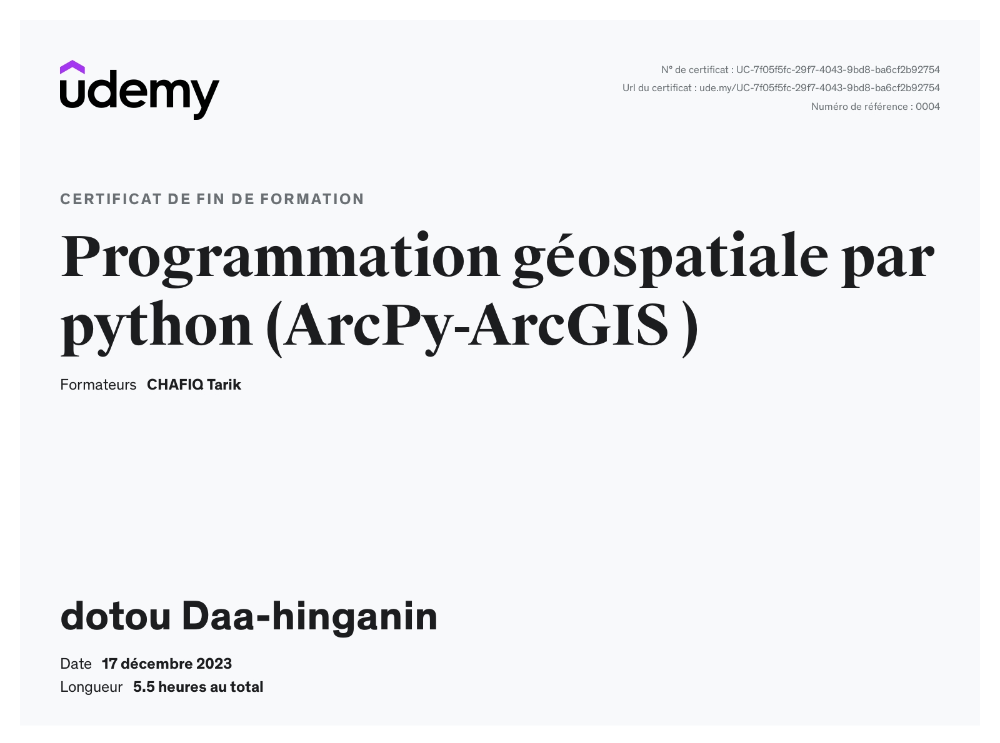Webmapping (Postgis,GeoServer, OpenLayer)
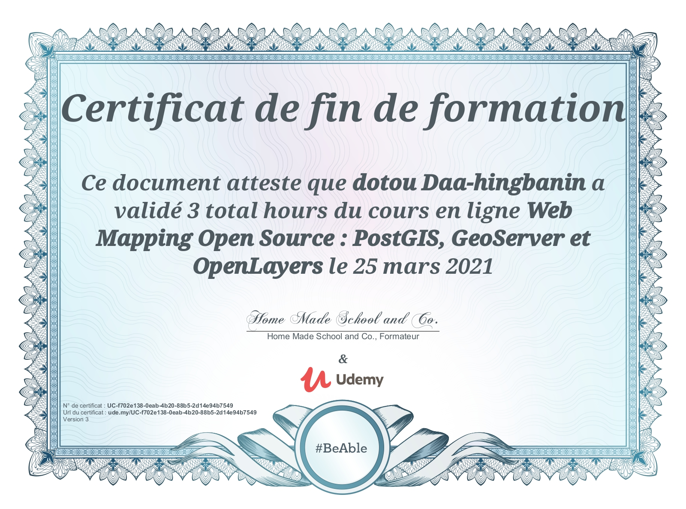ESRI (Cartography)
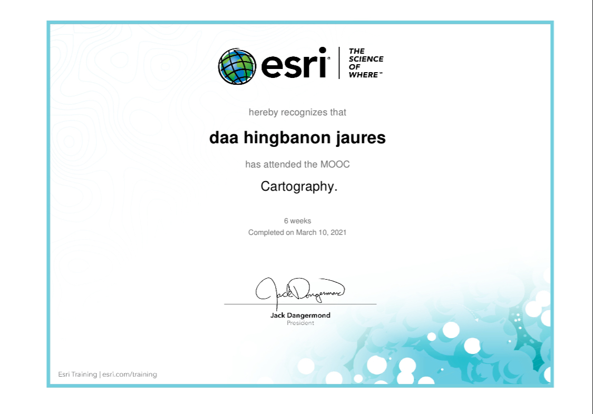Module à étudier: Administration de base de donnée, Python, Géostatistiques, Webmapping, Gestion des ressources en eau, Etude limnique.
Modules étudiés : SIG Concepts fondamentaux Traitement, analyse et cartographie des données spatiales Conception de Bases De Données spatiales Acquisition et traitements des données spatiales : GPS, Lidar, Sonar et SIG Mobiles
Réactualisé des connaissance dans le domaine la géographie physique, humaine, l’aménagement du territoire, et l'urbanisme ainsi que en analyse spatiale, en cartographie, en gestion de projets d'aménagement.
Cette licence m'a permis de maîtriser les outils et méthodes pour analyser, représenter, gérer les données géospatiales, ouvrant ainsi la porte à un monde où la cartographie, l'analyse spatiale et la visualisation dynamique deviennent essentielles.
© Jaurès DAA-HINGBANON | All Right Reserved